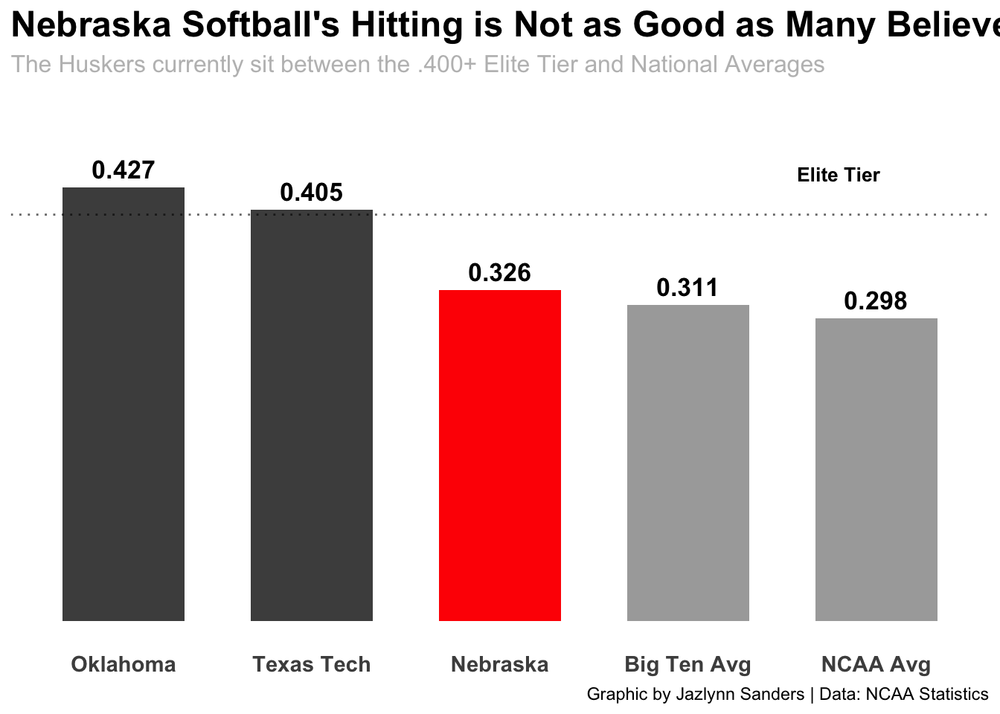
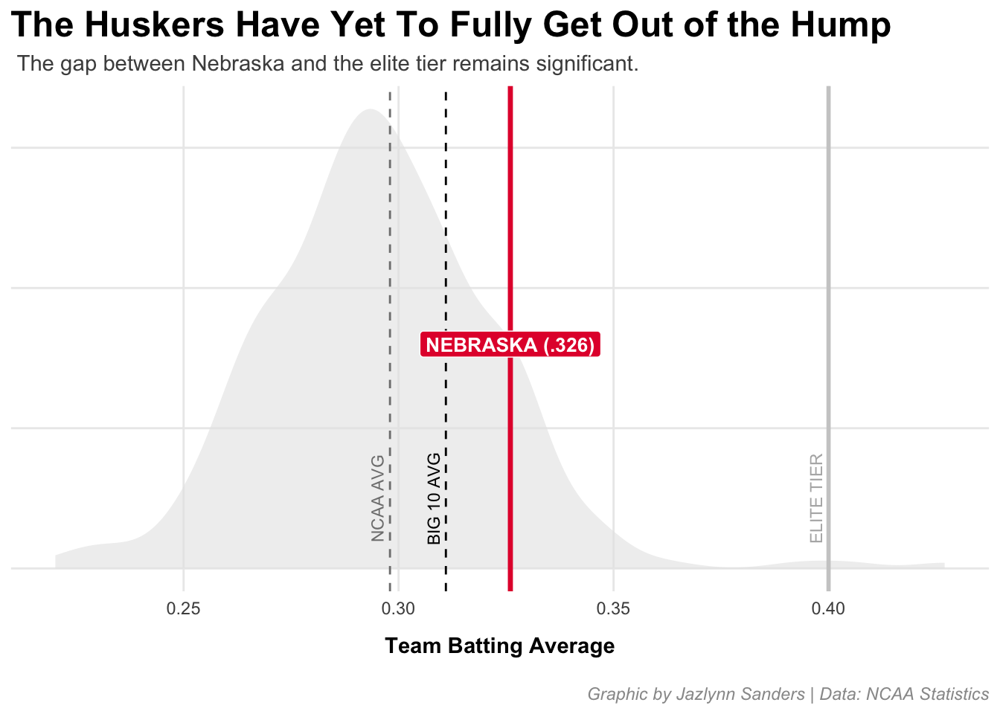
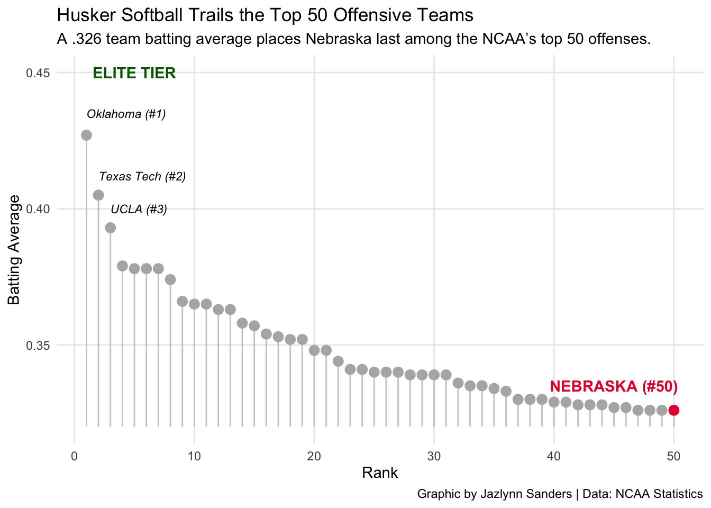

In the world of NCAA softball, a batting average is more than just a statistic; it’s a heartbeat of offensive identity. For Nebraska, that identity is currently defined by steady, reliable production that keeps them competitive but not yet explosive. While they aren’t struggling at the bottom of the rankings, they find themselves in the challenging middle ground, better than the average, but still looking up at the powerhouse programs that have turned hitting into a high art form. Crucially, when compared to their pitching stats, which often flirts with national dominance, the hitting hasn’t quite reached that same elite level.
Code
library(tidyverse)library(readr)library(scales)library(tibble)softball_stats <-tibble(team =c("Oklahoma", "Texas Tech", "Nebraska", "Big Ten Avg", "NCAA Avg"),ba =c(0.427, 0.405, 0.326, 0.311, 0.298),type =c("Elite", "Elite", "Nebraska", "Comparison", "Comparison"))ggplot(softball_stats, aes(x =reorder(team, -ba), y = ba, fill = type)) +geom_col(width =0.65) +geom_hline(yintercept =0.400, linetype ="dotted", color ="black", alpha =0.6) +annotate("text", x =4.8, y =0.44, label ="Elite Tier", size =3.5, fontface ="bold") +geom_text(aes(label =sprintf("%.3f", ba)), vjust =-0.5, fontface ="bold", size =4.5) +scale_fill_manual(values =c("Elite"="grey30", "Nebraska"="red", "Comparison"="darkgrey")) +labs(title ="Nebraska Softball's Hitting is Not as Good as Many Believe",subtitle ="The Huskers currently sit between the .400+ Elite Tier and National Averages",caption ="Graphic by Jazlynn Sanders | Data: NCAA Statistics",x =NULL, y =NULL ) +scale_y_continuous(limits =c(0, 0.5)) +theme_minimal() +theme(legend.position ="none",panel.grid =element_blank(), axis.text.y =element_blank(), axis.text.x =element_text(face ="bold", size =11),plot.title =element_text(size =18, face ="bold"),plot.subtitle =element_text(size =12, color ="grey") )

Nebraska’s offensive narrative begins with a “above average” status, but not by much. While the Huskers maintain a lead over the vast majority of college programs and the Big Ten average, a significant divide appears when measured against the national elite. Think of Nebraska as the star athlete in their hometown. They are clearly the best on their local field and easily outshine the average players around them. However, when they step into a professional stadium, they realize that local dominance is just the entry fee. They have mastered their immediate surroundings, but they are now staring at an elite group of pros who operate at a completely different level of speed and power. In this comparison above, the distance between Nebraska’s .326 and the .400+ marks of programs like Oklahoma isn’t just a few percentage points; it’s a completely different brand of softball that separates a good team from a historical offensive powerhouse.
Code
set.seed(42)ncaa_data <-tibble(avg =c(rnorm(280, mean =0.295, sd =0.025), 0.427, 0.405, 0.393))ggplot(ncaa_data, aes(x = avg)) +geom_density(fill ="grey90", color =NA, alpha =0.6) +geom_vline(xintercept =0.298, linetype ="dashed", color ="grey50") +geom_vline(xintercept =0.311, linetype ="dashed", color ="black") +geom_vline(xintercept =0.400, color ="grey80", size =1) +geom_vline(xintercept =0.326, color ="#E41C38", size =1.2) +annotate("text", x =0.298, y =2.5, label ="NCAA AVG", angle =90, vjust =-0.5, size =3, color ="grey50") +annotate("text", x =0.311, y =2.5, label ="BIG 10 AVG", angle =90, vjust =-0.5, size =3, color ="black") +annotate("text", x =0.400, y =2.5, label ="ELITE TIER", angle =90, vjust =-0.5, size =3, color ="grey70") +annotate("label", x =0.326, y =8, label ="NEBRASKA (.326)", fill ="#E41C38", color ="white", fontface ="bold", size =3.5) +labs(title ="The Huskers Have Yet To Fully Get Out of the Hump",subtitle =" The gap between Nebraska and the elite tier remains significant.",caption ="Graphic by Jazlynn Sanders | Data: NCAA Statistics",x ="Team Batting Average",y =NULL ) +theme_minimal() +theme(axis.text.y =element_blank(),panel.grid.major =element_line(color ="grey92"),panel.grid.minor =element_blank(),plot.title =element_text(face ="bold", size =18),plot.subtitle =element_text(color ="grey30", size =11),plot.caption =element_text(color ="grey60", face ="italic", margin =margin(t =15)),axis.title.x =element_text(face ="bold", margin =margin(t =10)) )
Warning: Using `size` aesthetic for lines was deprecated in ggplot2 3.4.0.
ℹ Please use `linewidth` instead.

Statistically, the vast majority of college softball teams are located inside the “hump”. This is a massive cluster where their hitting is consistent but ultimately predictable and nothing out of the ordinary. Nebraska has successfully defied the gravity of this average crowd, pulling themselves out of the hump and into the right of the distribution curve. They have moved past the Big Ten and NCAA standard but as the density curve illustrates, the Elite Tier exists as a sharp, distant breakaway. For the Huskers, surpassing the hump is a vital first step, but it reveals the lonely territory they must navigate to catch the outliers who have moved beyond the curve entirely.
Code
top_50 <-tibble(rank =1:50,ba =c(0.427, 0.405, 0.393, 0.379, 0.378, 0.378, 0.378, 0.374, 0.366, 0.365, 0.365, 0.363, 0.363, 0.358, 0.357, 0.354, 0.353, 0.352, 0.352, 0.348, 0.348, 0.344, 0.341, 0.341, 0.340, 0.340, 0.340, 0.339, 0.339, 0.339, 0.339, 0.336, 0.335, 0.335, 0.334, 0.333, 0.330, 0.330, 0.330, 0.329, 0.329, 0.328, 0.328, 0.328, 0.327, 0.327, 0.326, 0.326, 0.326, 0.326),is_nebraska =c(rep(FALSE, 49), TRUE))ggplot(top_50, aes(x = rank, y = ba)) +geom_segment(aes(xend = rank, yend =0.320), color ="grey80") +geom_point(aes(color = is_nebraska), size =3) +scale_color_manual(values =c("TRUE"="#E41C38", "FALSE"="grey70")) +annotate("text", x =1, y =0.435, label ="Oklahoma (#1)", size =3, fontface ="italic", hjust =0) +annotate("text", x =2, y =0.412, label ="Texas Tech (#2)", size =3, fontface ="italic", hjust =0) +annotate("text", x =3, y =0.400, label ="UCLA (#3)", size =3, fontface ="italic", hjust =0) +annotate("text", x =45, y =0.335, label ="NEBRASKA (#50)", color ="#E41C38", fontface ="bold") +annotate("text", x =5, y =0.45, label ="ELITE TIER", color ="darkgreen", fontface ="bold") +labs(title ="Husker Softball Trails the Top 50 Offensive Teams",subtitle ="A .326 team batting average places Nebraska last among the NCAA’s top 50 offenses.",x ="Rank",y ="Batting Average",caption ="Graphic by Jazlynn Sanders | Data: NCAA Statistics" ) +theme_minimal() +theme(legend.position ="none", panel.grid.minor =element_blank())

Continuing the narrative, being in the Top 50 is a badge of honor, but it also highlights the grueling nature of the climb to the top. As we look at the top tier of hitters in the country, Nebraska sits at the very edge of this exclusive group. As you can see, the Huskers are hanging onto the tail end of excellence. If they want to be looked at as a national leader iffensivly, they will need to work to find that extra spark needed to move from the bottom of the Top 50 to the top of the leaderboard.
Nebraska softball is far from an “okay” team in the eyes of the general public, but by elite standards, they are still waiting for their breakthrough. The data proves they have the foundation to outpace the average program, yet it also serves as a motivator. The gap between a .326 average and the .400+ elite tier is small in numbers but massive in impact. For the Huskers, the journey from being safe to scary is the next great chapter in their story, and I believe they can do it.